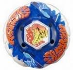

Bakushin Susanow 105F
| Bakushin Susanow 105F | |
|  | |
| Number: | |
|---|---|
| System: | Hybrid Wheel System |
| Type: | Attack |
Contents
Note: Hasbro only released this Beyblade in conjunction with a video game. The Luna Eclipse Ver., which comes with 90WF instead of 105F, was however released both in the same way, and as a Starter.
Face: Susanow
The Face on this Beyblade depicts Susanoo, the Shinto God of the Sea and Storms.
Clear Wheel: Susanow
- Weight: grams
Susanow is an ocean blue translucent Clear Wheel in its original release. The design is made to resemble two waves with sharp designs almost like hooks or lightnings that arch upward. When placed on the Metal Wheel, the relief is remniscent of a Tsunami. Between the waves are orange letters that read "Susanow" in a graffiti style on both sides.
Metal Wheel: Bakushin
- Weight: grams
Bakushin is an originally white Metal Wheel made in a circular shape with very small V-shaped gaps which are approximately one millimeter deep. As a whole, this Metal Wheel resembles a rock with declinations of varying steepness and carved ridges here and there. Although it generally performs in a mediocre way, some testing has showed that it has some decent Stamina and OK Attack despite its inferior weight. Its highest potential lies in its apparent defensive capabilities, however, due to its physical compatibility with BD145 where very little space is left between the Metal Wheel and the Track. In fact, even at the time of its release, it equaled Earth compared to the top-tier Attack types of that period, but the fact that Bakushin was painted repelled Bladers from testing it extensively. On average, however, especially with 4D parts available, Bakushin should only be used as a very last resort. Even with its potential in a few different Beyblade types, it could overall almost be classified as outclassed even following its release, since it possesses the flaws of most Balance-type parts that try to do well in several categories but fail to excel anywhere.
Use in Defense Customization
Bakushin can be used in such good Defense combos as MF Bakushin Aquario BD145RSF.
Track: 105
- Weight: 1 gram
This Track is currently the fourth lowest Track available, but is outclassed in terms of Attack and Stamina by the 85, 90, and 100 Tracks. 105 has no problem with floor scrapes, but still is an outclassed part and should only be chosen when none of the aforementioned Tracks are available.
Bottom: Flat
- Weight: 1 gram
The Flat Bottom has a plastic flat tip, which gives it an offensive movement pattern. It is the equivalent of Flat Core (HMS) or SG Flat (Plastic). The F Bottom has a hard time retaining a flower pattern, due to it being plastic, which results in it having less grip to the stadium floor than a rubber bottom. F has been overshadowed by countless other Attack Bottoms such as XF, MF, RF, and R²F.
Other Versions
- Metal Face Bakushin Susanow 105F ? Hudson Entertainment Beyblade : Metal Fusion DS game exclusive (Dark blue Metal Face)
- Bakushin Susanow 90WF Luna Eclipse Ver. ? WBBA Campaign, later WBBA Shop Exclusive Booster, and Hasbro Metal Masters Starter (Dark red Face, Track and Bottom, black Metal Wheel and Clear Wheel, white "Susanow" writings)
- Metal Face Bakushin Susanow 90WF Luna Eclipse Ver. - Beyblade Metal Masters video game exclusive for Walmart and Gamestop (Black Metal Face, dark red Track and Bottom, black Metal Wheel and Clear Wheel, white "Susanow" writings)
Gallery
Overall
Bakushin may have some untapped Stamina, Defense and Attack potential, but it still got outclassed in TAKARA-TOMY BeyStadiums due to the appearance of even such outclassed, but better, Metal Wheels like Earth, as well as countless superior Attack parts. Moreover, 105 and F are completely outdated parts which serve no purpose in competition. There is little to no reason to purchase this Beyblade other than for collectors purposes.